A/T Torque Data
MPRA 4-spd A/T, R.Side Cover Assembly 1 Of 6:
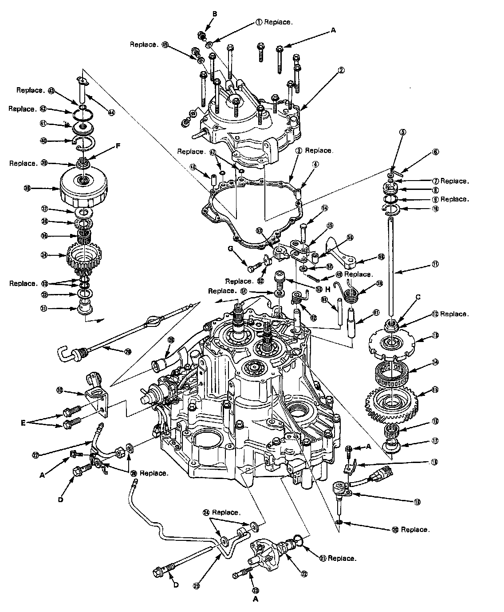
MPRA 4-spd A/T, R. Side Cover Legend 2 Of 2:
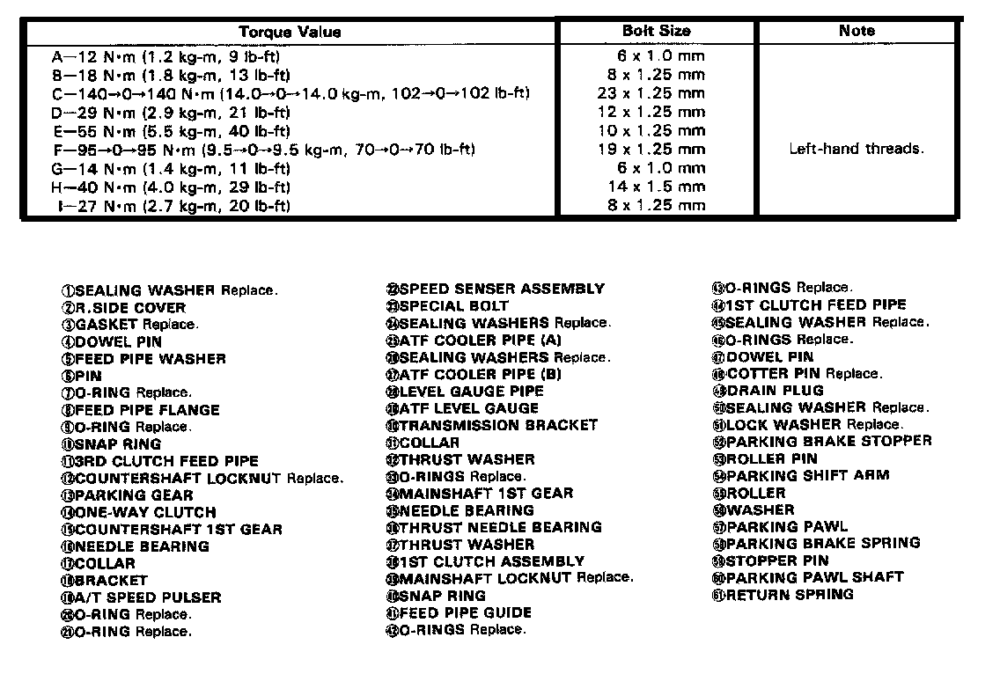
MPRA 4-spd A/T, Transmission Housing 3 Of 6:
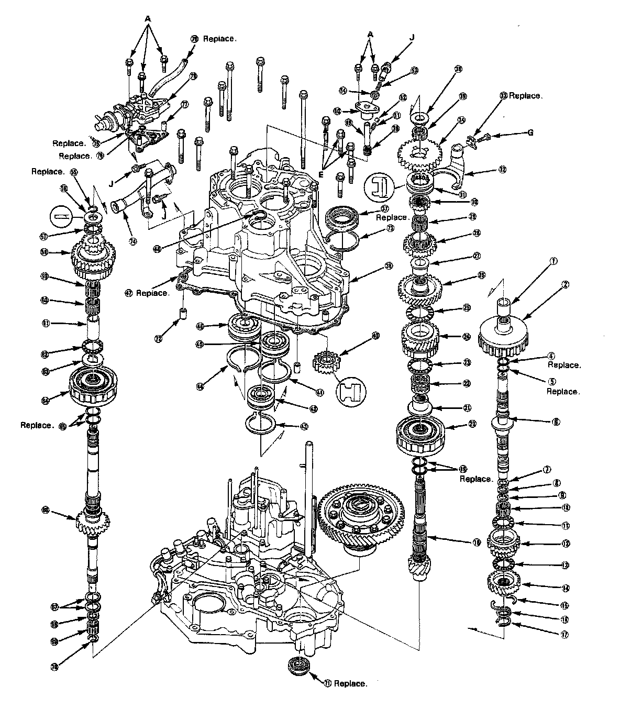
MPRA 4-spd A/T, Transmission Housing Legend 4 Of 6:
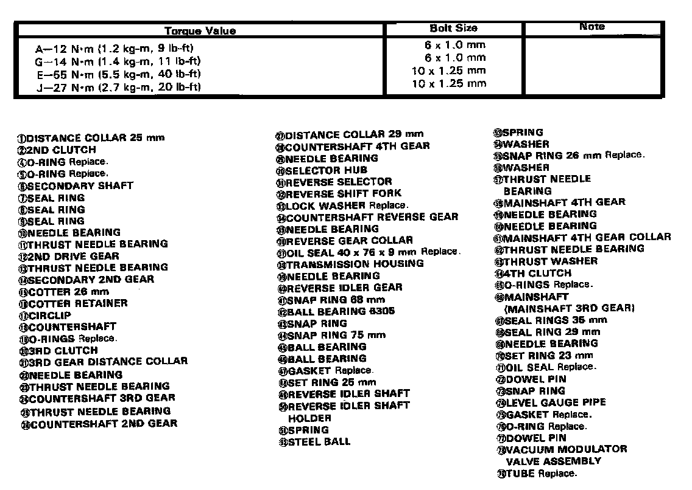
MPRA 4-spd A/T, Torque Converter Housing 5 Of 6:
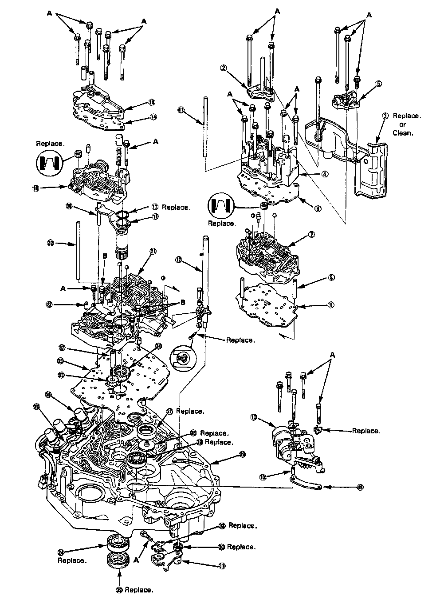
MPRA 4-spd A/T, Torque Converter Housing Legend 6 Of 6:
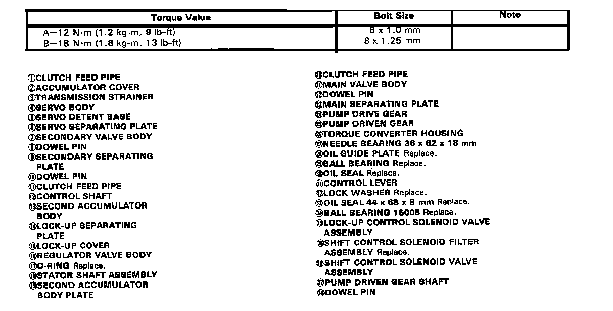
MPRA 4-spd A/T, Regulator Valve Body Torque:
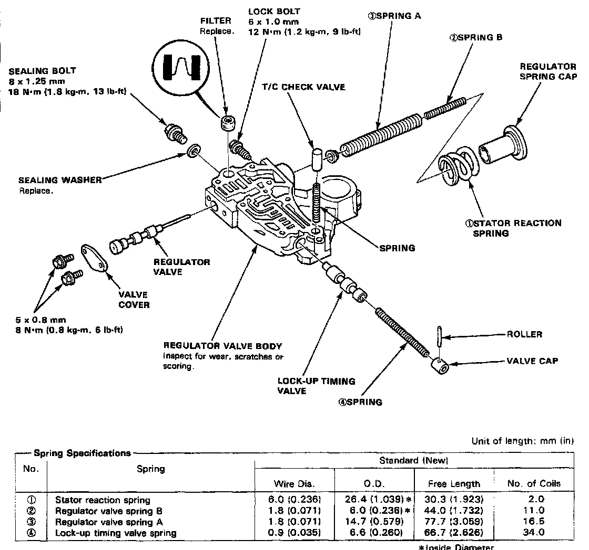
MPRA 4-spd A/T, Reverse Idler Bearing Holder Torque:
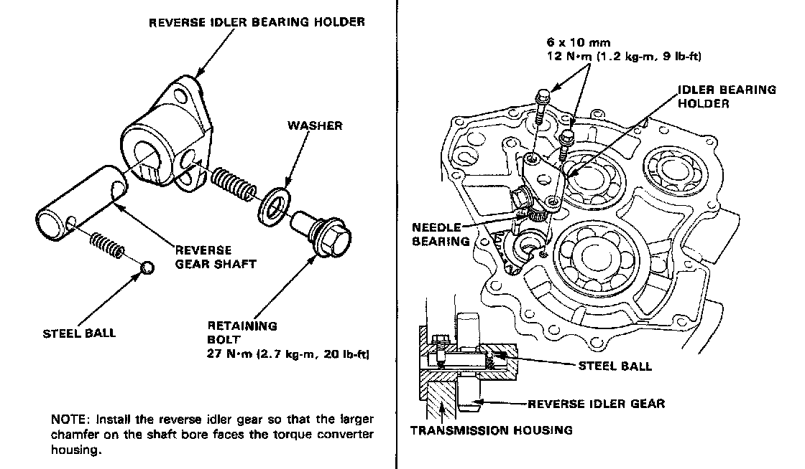
MPRA 4-spd A/T, Parking Brake Stopper Lock Bolt:
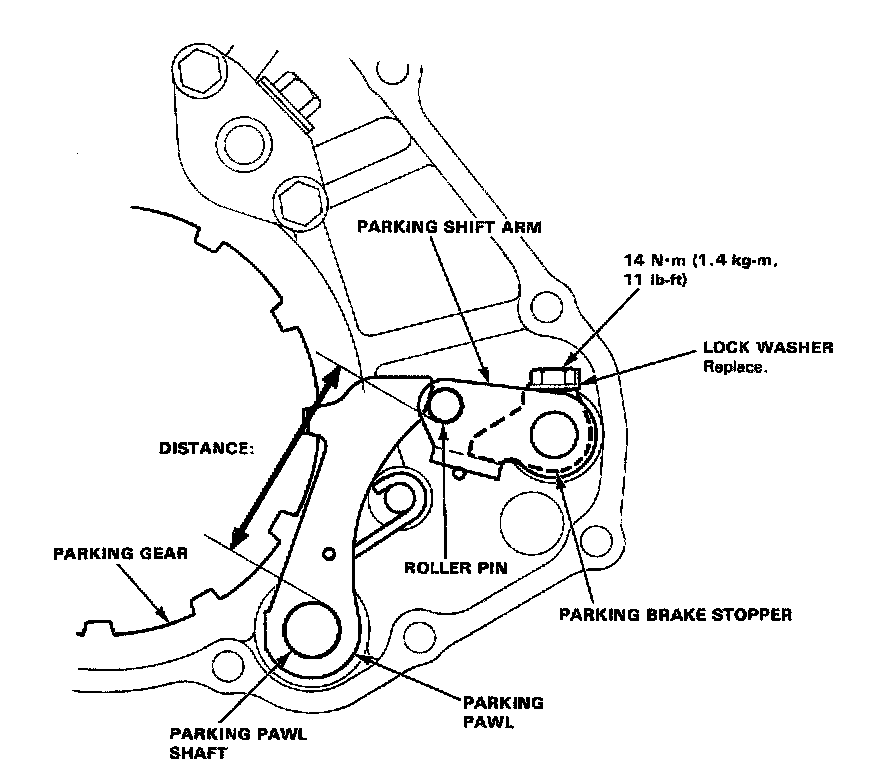
MPRA 4-spd A/T, Torque Converter Assembly:
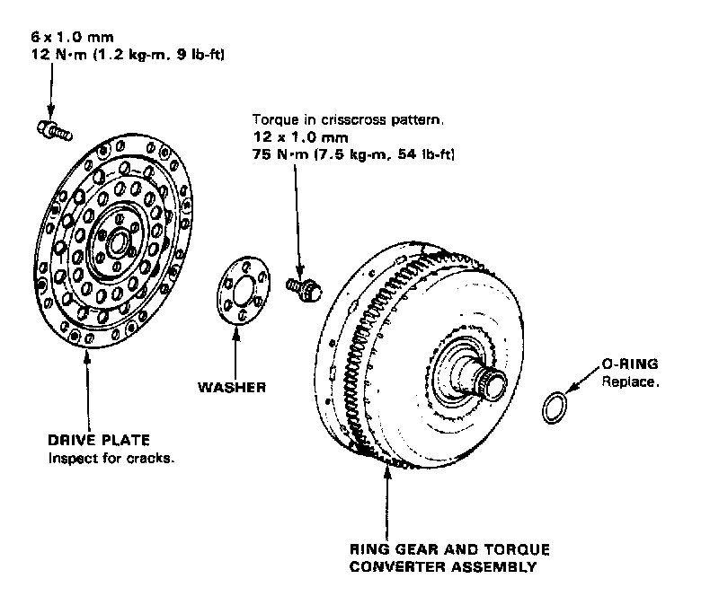
MPRA 4-spd A/T, Transmission Mounting:
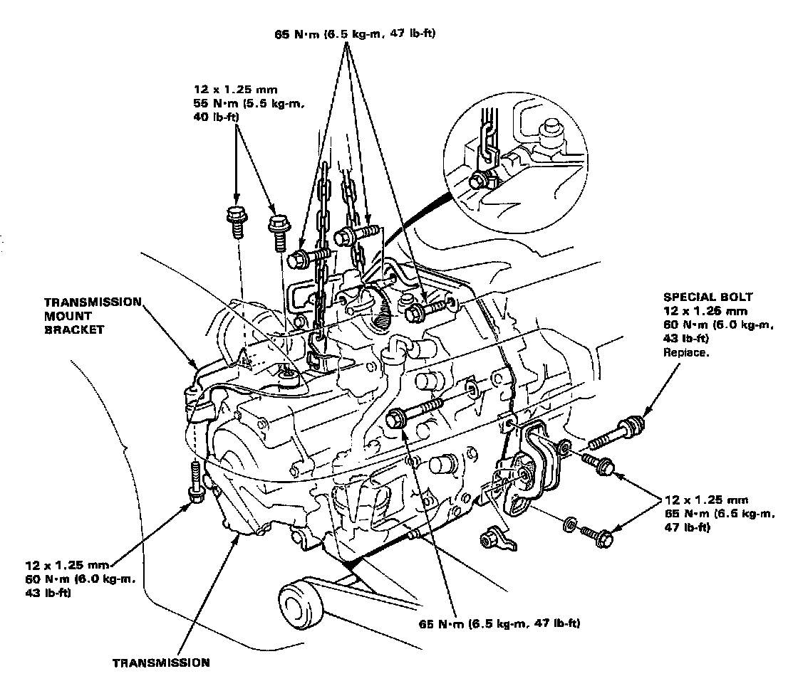
MPRA 4-spd A/T, Transmission Housing Mounting Bolts:
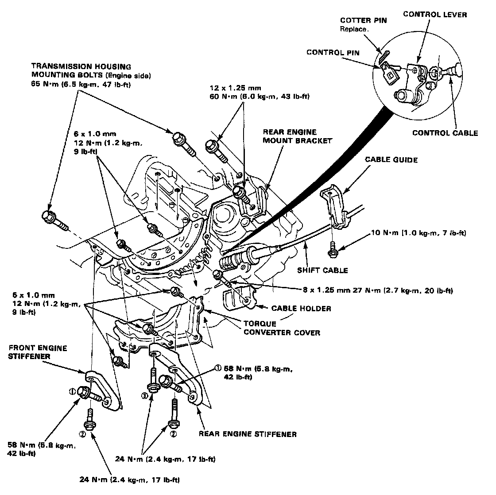
MPRA 4-spd A/T, Gearshift Selector Assembly:
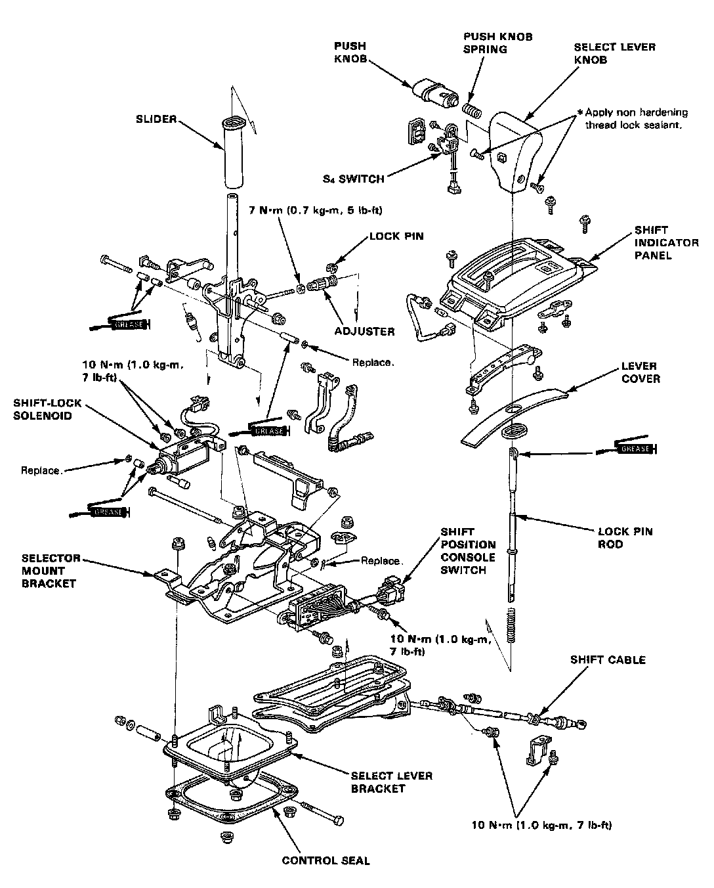
MPRA 4-spd A/T, Shift Cable Assembly:
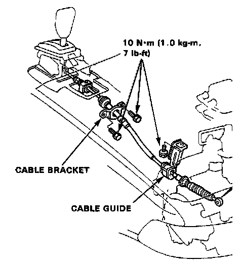
MPRA 4-spd A/T, Vacuum Modulator Assembly:
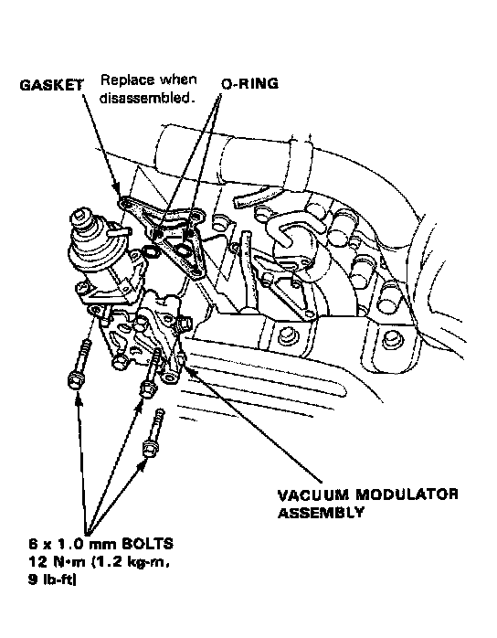